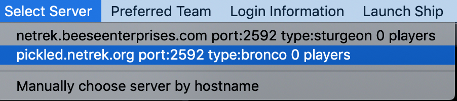
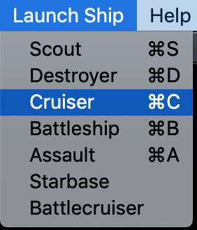
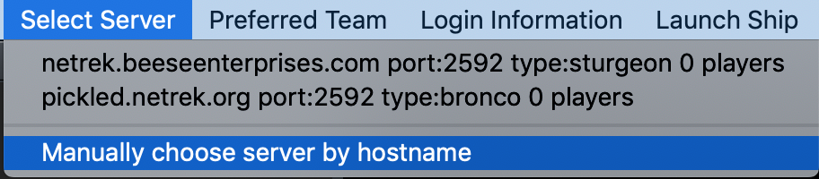
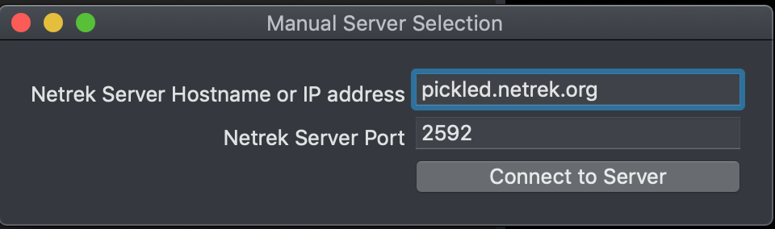
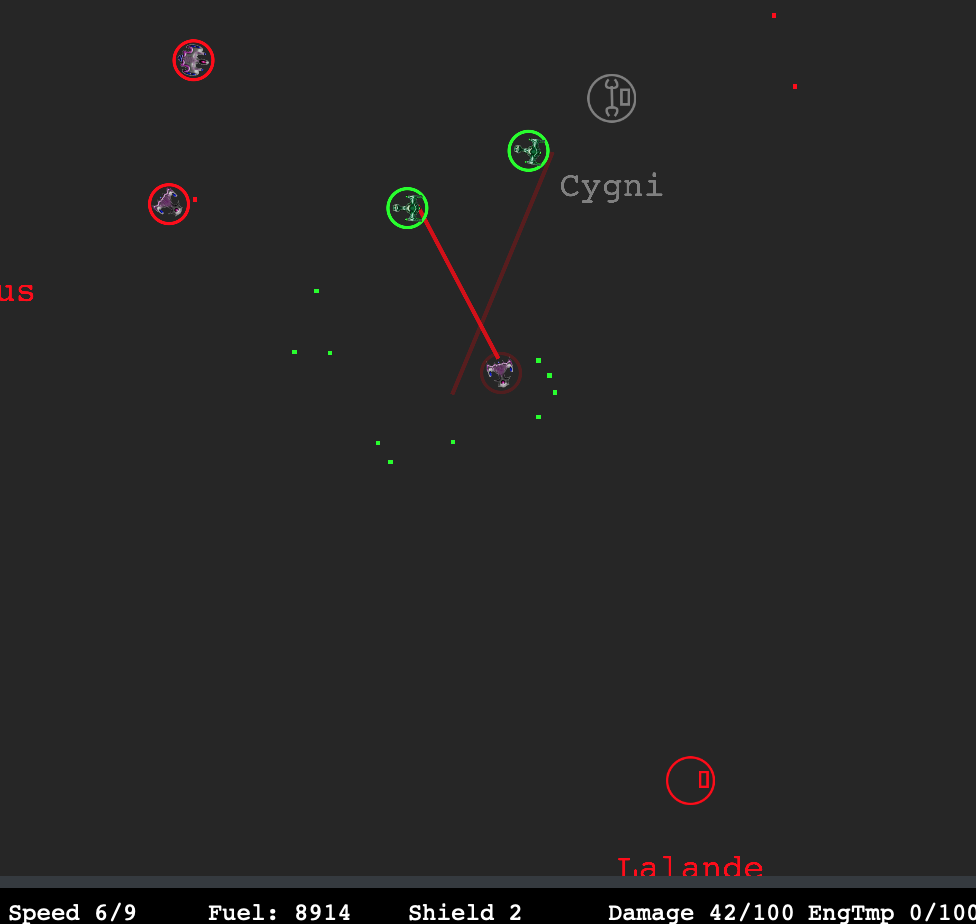
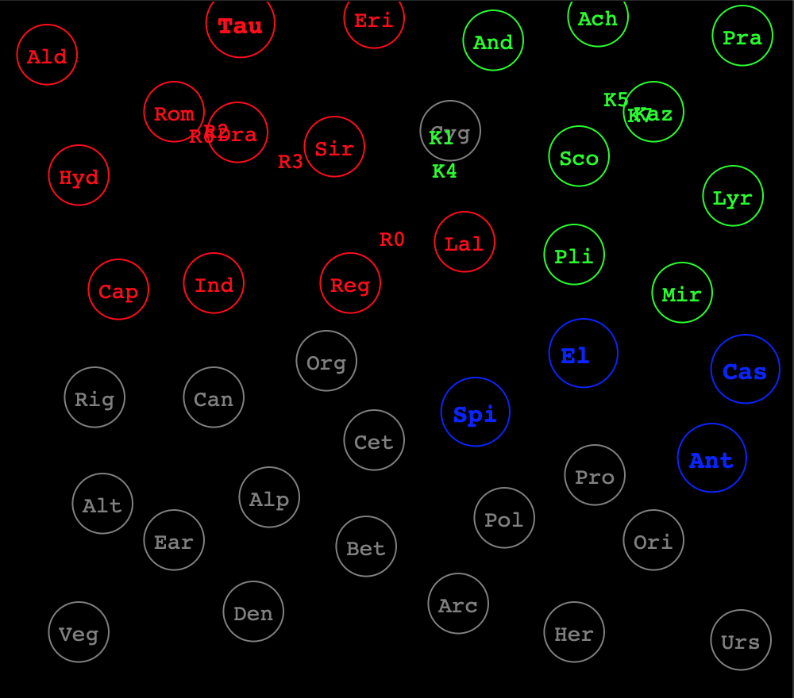

Netrek Overview
Netrek is the original Internet team game. First implemented in 1989, Netrek pits two teams against each other for control of the galaxy. Each team can have up to 16 human-controlled players. Each team starts with 10 planets. The universe has 40 planets (2 teams are not involved in the current war). Command your ship! Destroy enemy ships. Bomb enemy armies. Carry armies from your planets to enemy planets to capture them. Wipe the enemy team from the universe!
This application is a “Netrek client”. It is written in Swift and runs on MacOS. It connects to a “Netrek Metaserver” to find a list of “Netrek servers”. Then it connects to a “Netrek Server” to play the game. Other humans with other clients connect to the servers to create a multiplayer game. If insufficient humans are playing on the server, robots automatically fill up enough slots to make the game interesting.
To start playing:
Select a server

Select “Launch ship -> Cruiser”

If no servers are listed, you can select “Select server -> manually choose server” and type in pickled.netrek.org for the server name. The default port of 2592 is fine.  
Basic ship controls:
Left mouse button fires torpedoes
Right mouse button changes course (also control-click with left mouse)
Middle mouse button fires lasers
Number keys select speed
s key toggles shields
The top left window is the “tactical map”. Your ship is always in the center of the tactical map. Each team has a color. Shooting at your own team will not hurt them, but will use up fuel. Torpedoes are small dots. Lasers are lines. Shields are circles around each ship.

The top right window is the “strategic map”. It shows the entire universe. If you are on the red team, and the opposing team is green, your goal is to capture all the green planets and turn them red.

feedback@networkmom.net